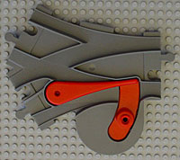
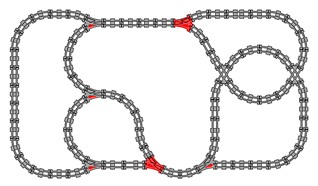
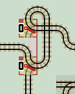
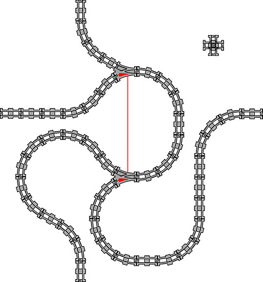
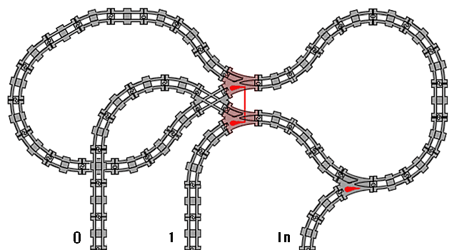
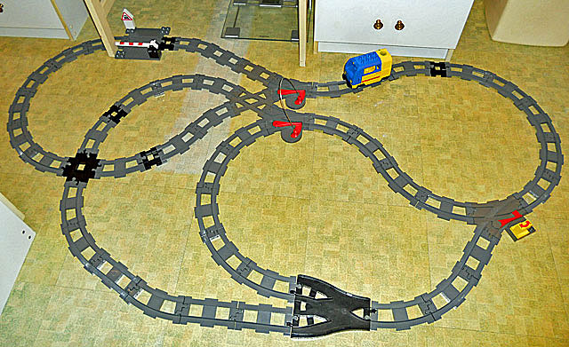
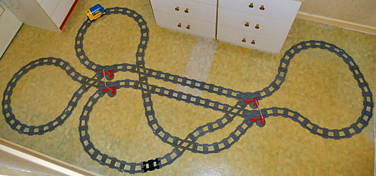

Duplo Layouts
Duplo is a train set system made by Lego®. It is well built and a great toy for kids. There is a useful Eurobricks forum on Duplo trains and track.
It is ideal for testing computational layouts as it has the two different types of point required: 'lazy' and 'sprung' (as pointed out by Robert Cailliau).
The current 'new' point is a lazy point. The older type has an additional spring mechanism beneath the track so it behaves as a sprung point.
Duplo PointsDuplo points have a red lever that is set by an operator to guide the train onto either track. New 'Lazy' Points These are switched by a train arriving on the 'wrong' branch line. The train wheels simply push against the lever, forcing it to switch over. |

A new lazy Duplo point |
Old 'Sprung' Points The 'old' type of point allows the operator to set the lever to guide the train onto either branch, but, the train cannot switch the point when arriving from a branch line. The 'old' points remember the branch line set by the operator. The 'new' points remember the last branch line the train arrived on. |
An old sprung Duplo point |
As both types of points are available for one system, it makes sense to build some of the train track layouts using Duplo track. However, with only a 30o turn instead of (possibly unrealistic) 90o turn, layouts are a good deal larger.
Here are a few Duplo layouts:
Count Up (increment)

|
| Click layout to pause/run train | Click points to switch 0/1 | Click start circle to reset train/points |
Each stage is built like this:

The complete counter layout. The right hand loop just serves to return the train.

Peter Nolan from the Duplo Trains Forums has made this layout and posted a video on You Tube !!
A 2-stage counter can be bent round and the end loops overlapped to create a more compact rectangular layout. No one needs know its computational origin.

Equivalent Circuits
The old types of Duplo point are available on eBay. However, they can be emulated with two linked lazy points. Also see equivalent circuits.
 |
 |
And a cross-over point equivalent layout.

|
| Click layout to pause/run train | Click start circle to reset train |

Flip-Flop CircuitAn important circuit is a flip-flop. This needs both an 'old' style sprung point and a linked pair of lazy points (a co-operative point). Trains arriving on the main line are diverted up into an inverter loop and then exit the lower lazy point on alternate branch lines. Also see equivalent circuits. Adam Chalcraft and Michael Greene in their paper 'Train Sets' name the circuit a 'Distributor'. Without the use of linked points they must construct a layout of infinite size. |
|


And here is how it looks as a Duplo layout.

Auto Switching Layout
This uses 2 pairs of linked lazy points. See Auto Switching Layouts page for more layouts.

